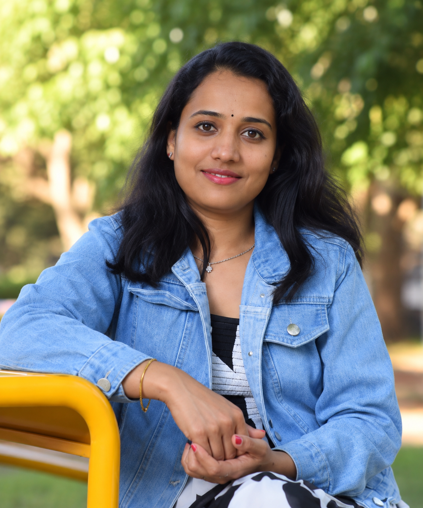

Raman Spectroscopy & Phonon Dynamics
Resonant and off-resonant Raman spectroscopy, phonon interactions, surface optical modes and semiconductor nanostructures.
Experimental Physicist & Materials Scientist
Exploring semiconductor nanomaterials, light–matter interactions, phonon dynamics and sustainable energy technologies.

I am an experimental physicist and materials scientist investigating semiconductor nanomaterials, Raman spectroscopy, nanophotonics, light–matter interactions and sustainable energy applications. My Ph.D. in Physics from the National Institute of Technology Tiruchirappalli focused on optical and Raman studies of polar ZnS nanostructures for UV photodetectors. My postdoctoral research at Ariel University includes halide perovskites, transition metal dichalcogenides, hybrid materials and FDTD simulations.
Experience: Postdoctoral Fellow, Ariel University (since 2023, per September 2026 CV); Contract Assistant Professor, Bishop Moore College; Lab Instructor, NIT Tiruchirappalli.
Resonant and off-resonant Raman spectroscopy, phonon interactions, surface optical modes and semiconductor nanostructures.
Halide perovskite nanowire arrays, optical field enhancement and finite-difference time-domain simulations.
Transition metal dichalcogenides, nanotubes, hybrid interfaces and optical properties.
Semiconductor photocatalysts for pollutant degradation, hydrogen evolution and CO₂ conversion.
Selected publications from the uploaded CV. Visit Google Scholar for the full and most current list.
Advanced Optical Materials front cover (issue 15/2025); featured in the Women in Photonics collection.
Best Poster Presentation, Israel Chemical Society (2024); Best Flash & Poster Presentation, Nanotechnology from Academia to Industry (2023).
Guest editing and peer review for scientific journals, including Journal of Raman Spectroscopy and Nature Communications (co-review).
Contract Assistant Professor, Bishop Moore College; laboratory instruction at NIT Tiruchirappalli; co-mentoring undergraduate and graduate researchers.
For research collaborations, academic opportunities and scientific discussions: